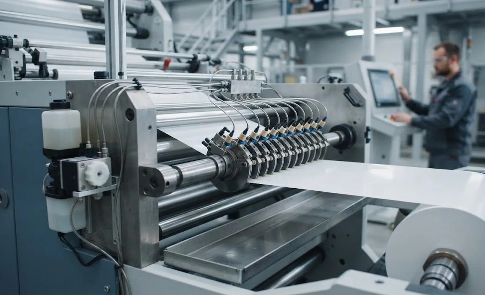
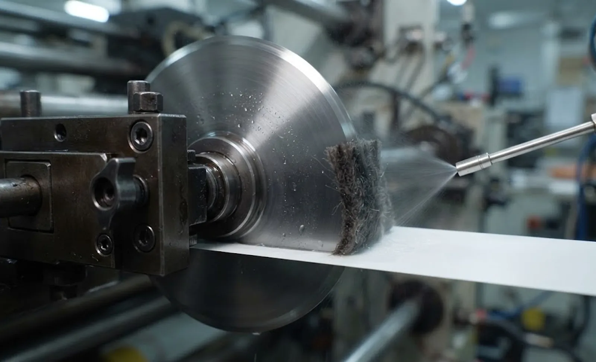

Published October 4, 2026 | By HDPTH Technical Editorial Team

Blade lubrication is one of the most over-sold and least defined options on a slitter rewinder. Some builders list it as standard, some buyers request it out of habit, and very few projects state what the fluid is supposed to achieve. The result is a pump, a manifold and a reservoir that either soaks the web in residue or quietly runs dry and does nothing at all. This guide sets out which slitting jobs need a fluid and how to specify and test it.
Three jobs that all get called blade lubrication
Machine lubrication — grease and oil for bearings, guides, chains and gearboxes — is scheduled maintenance and has nothing to do with the cut; see the lubrication and preventive maintenance guide. Knife-edge cooling removes heat from the blade and cut edge, and matters on thin films and high-speed shear slitting where the edge shows fusion rather than separation.
Release or anti-build-up fluid stops adhesive, coating or molten polymer from sticking to the blade face. This is the most common real requirement, and it is a chemistry problem rather than a cooling problem. Asking for "lubrication" without saying which of the three you mean is how projects get the wrong system.
When slitting genuinely needs a fluid
If the blade face collects material, if the edge fuses instead of separating, or if a non-contact thermometer shows the blade running hot, a fluid has a job to do. If the edge is clean and cool, fluid only adds residue and a slip hazard.
| Material situation | Symptom without control | What actually helps |
|---|---|---|
| Adhesive tape, labelstock, protective film | Adhesive builds on blade faces; width drifts, drag marks appear | Release fluid by felt wick or pad, plus knife clearance check |
| Thin film at high speed | Fused or sealed edge, smoke and odour | Edge cooling, air-assisted micro-spray, extraction |
| Low-melt coating or EVA | Smearing and material transfer at the edge | Light release fluid; re-check clearance first |
| Thick fibre and nonwoven webs | Dust pastes onto the blade and drags the web | Dry extraction first; only a light dose if dust still adheres |
What build-up costs you before anyone notices
Deposit on a blade grows slowly and then changes the cut quickly. A film of adhesive on the blade face effectively increases blade thickness, so the slit gap closes, the web is pinched and the edge tears or stretches. Width tolerance drifts across the roll, and because the change is gradual the first signal is usually a customer complaint rather than an operator alarm.
The cost is not only spoiled rolls. Cleaning a knife stack is manual work that stops the line, and on adhesive work it has to happen often enough to become the real limit on run length. Heat shortens blade life, the mechanism described in the knife life and consumables cost analysis, and build-up migrating onto the rewound roll contaminates the product.
Delivery methods and dosing
How the fluid arrives matters more than which fluid it is, because the failure modes are mechanical. A felt wick or pad against the blade face is self-limiting and forgiving — the right choice for adhesive release. Drip feed is simple but hard to control at low rates and tends to flood. An air-assisted micro-spray gives fine control on fast lines, at the cost of compressed air, nozzle maintenance and mist extraction. A kiss roller lays an even film across a wide web, suiting coating-type fluids rather than knife-line release.
For multi-knife gang slitting, the practical arrangement is a single metering pump feeding a manifold with a needle valve per knife head, so each station gets the dose it needs. Specify the dose in millilitres per hour per head and calibrate it by weighing the reservoir over a timed run — at commissioning and again at every preventive maintenance interval, because nozzles block and wicks dry out gradually rather than failing cleanly. Filter the fluid, keep the reservoir closed against dust, and fit a drip tray; a knife-line dose is measured in grams per hour, and too much fluid is far worse than too little.

Chemistry: what to choose, and what to avoid
Water-based fluids give the most cooling per unit volume and are inexpensive, but they evaporate, can corrode unprotected steel and release aggressive adhesives poorly. Mineral oils and synthetic esters release well and leave a residue on the web your downstream process must accept. Vegetable oils are biodegradable but oxidise and gum over time, which is the opposite of what a knife stack needs.
Silicone is the trap. Silicone releases beautifully and then contaminates everything it touches: carried onto a web that is later printed or laminated, it can cause adhesion failure and print defects that appear weeks after slitting and are hard to trace. Test any fluid against the actual adhesive too.
Where the fluid meets food, medical and print
If the finished roll becomes a food-contact material, the fluid becomes part of that assessment. Confirm the substance against the applicable regime — the EU framework Regulation (EC) 1935/2004 and its specific measures, or FDA food-contact requirements in the United States — keep the dose minimal and file the documentation with the machine records. On hygienic and medical work, avoid silicone and check that the dosing hardware does not compromise the hygienic design and cleanroom layout. For printing customers, agree a residue limit and test adhesion on a slit sample.
Proving it at the factory acceptance test
A lubrication system is easy to install and hard to verify, so make it an explicit run in the factory acceptance test. Slit the same roll dry, then with fluid at three dose levels, and for each run record the edge under a loupe, the slit width across the roll, blade temperature from a non-contact pyrometer, and the deposit weight on a blade face after a fixed length of web. Run at least thirty minutes to expose nozzle blocking or wick dry-out, make the dose a recipe parameter, and confirm the control logic stops the fluid when the line stops.
Slitting adhesive, coated or thin-film webs?
Send the material stack-up, adhesive type, knife configuration and line speed. HDPTH will say whether a knife-line dosing system is justified, propose a compatible arrangement and run with-and-without trials at acceptance.
Discuss Your Slitting ApplicationQuestions to put to every vendor
- What measurement shows that this material needs a fluid rather than better knife setup?
- What is the dose in ml per hour per knife head, and how do I verify it myself?
- What residue does the fluid leave on a roll that will later be printed, coated or laminated?
- Is the fluid acceptable for a food-contact or medical end use, and what documentation do you supply?
- How are mist, drip and spill controlled, and how does the dosing system interact with dust extraction?
Frequently asked questions
Does a slitter rewinder need blade lubrication at all?
Most slitting should run dry. Add a knife-line fluid only where slitting generates enough heat or material transfer to damage the cut: pressure-sensitive adhesives, low-melting coatings, thin films running fast enough to fuse at the edge, and fibre webs that paste dust onto the blade. A correctly set dry knife gives a clean edge on most paper, film and nonwoven.
What lubricant should I use when slitting adhesive tape or labelstock?
The job is release, not cooling, so a light low-residue fluid applied by felt wick or pad at the blade face usually beats a spray. Silicone fluids release beautifully and contaminate everything downstream: a silicone film on a web that is later printed or laminated can cause adhesion failure and print defects. Test the fluid against the actual adhesive as well.
How do I set and verify the blade lubricant dose?
Express the dose in millilitres per hour per knife head rather than as a pump setting, and verify it by weighing the reservoir over a timed run. Calibrate at commissioning and at each preventive maintenance interval, because nozzles block and wicks dry out gradually. Too much fluid is worse than too little: it migrates onto the web and carries dust into the knife stack.
Can I use blade lubricant if the slit material is for food contact?
Only with documentation. If the finished roll is intended for food contact, the lubricant becomes part of that assessment and must be confirmed against the applicable regime — the EU framework Regulation (EC) 1935/2004 with its specific measures, or FDA food-contact requirements in the United States. Keep the dose minimal and confirm the declaration with your compliance team.
Is blade lubrication a substitute for correct knife clearance and overlap?
No. Fluid cannot compensate for a pinching knife stack, a bottom knife worn out of tolerance or an overlap that is wrong for the material thickness. Where lubricant is added to cure edge defects the usual cause is a knife clearance or alignment problem: the fluid hides it for a while and adds a contamination risk. Fix the set-up first.
Sources
- Regulation (EC) No 1935/2004 on food-contact materials: the EU framework governing what may be on a food-contact web
- US FDA food contact substances: how food-contact substances are regulated and documented
- EU Machinery Regulation (EU) 2023/1230: safety requirements for dosing systems, mist control and guarding
- ISO 9001: quality management requirements behind parameter control and acceptance testing